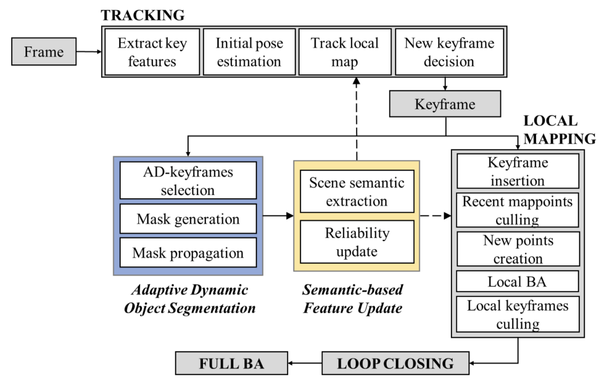
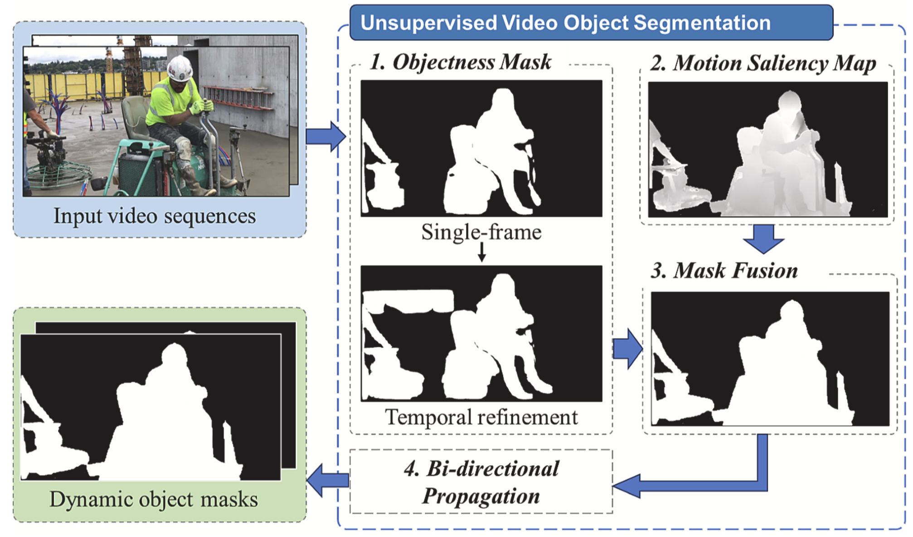
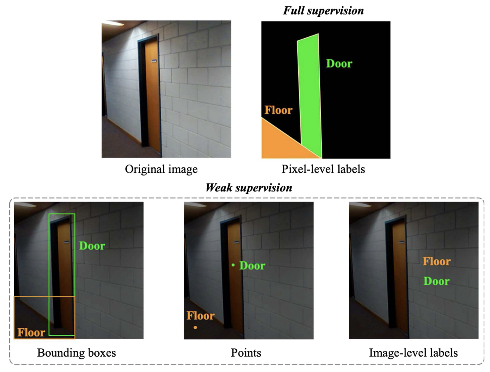
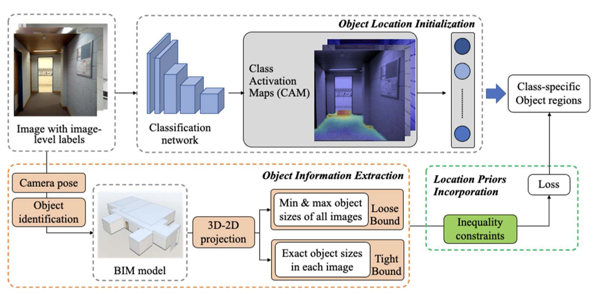

Learning-based 3D Localitzation and Tracking with Adaptive Object Segmentation and Semantic Integration for Dynamic Environments
This project aims to develop a learning-based 3D localization and tracking system in highly dynamic environments. This is achieved by combining adaptive dynamic objects segmentation and semantic scene understanding, building upon my ealier works (see projects below). This extension focuses on optimizing system responsiveness and accuracy to rapid changes.
Project Highlights:
-

- Adaptive Dynamic Object Segmentation: Building on our prior unsupervised video object tracking in project 2, this extended work uses adaptive keyframe selection based on optical flow magnitudes. This method focuses computational resources on frames that are most likely to include major dynamic changes to optimize both efficiency and accuracy.
- Comprehensive Semantic Scene Integration: We've expanded the system’s capability to include a deeper level of scene understanding. By using semantic data from the environment, the system better identifies and uses stable features for pose estimation.
Key Features:
- Continuous Adaptation in High Variabilities: The system continuously updates its understanding of the scene and adjusts to new objects and alterations, thus allows consistent performance under unpredictable conditions.
- Easy Integration with Existing Frameworks: Our developments allow for easy integration into existing localization and tracking pipelines to boost efficacy in complex and dynamic environments.
This project tackles major challenges like quick environmental shifts and inconsistent object detection, which many industries face. With improved accuracy and adaptability, our system supports applications in sectors like meditech, robotics, where precise and real-time scene analysis is important. If you are interested, our journal article is available here:
Yang, L., & Cai, H. (2024). Enhanced visual SLAM for construction robots by efficient integration of dynamic object segmentation and scene semantics. Advanced Engineering Informatics, 59, 102313.
Unsupervised Video Object Tracking in Highly Dynamic Environments
Our focus is to improve learning-based localization and tracking performance in environments where dynamics like moving or temporarily static objects often cause system failures. We developed a dynamic object tracking system that adapts to new environments without pre-defined object classes. This flexibility is important for applications like autonomous navigation where conditions change rapidly.
Project Highlights:
-

- Unsupervised Video Object Segmentation: Our unsupervised method detects and segments dynamic objects on the fly, without relying on pre-defined class labels. This is achieved by combining 'objectness masks' from CNNs and motion saliency between frames. It is proved that our method improves localization accuracy in dynamic environments by up to 0.5m.
- Bi-directional Mask Propagation: We further improved the accuracy by using forward and backward motion analysis to maintain consistency across sequences.
Key Features:
- Real-time in Action: Our system continuously adjusts to new objects and changes to ensure dependable performance in unpredictable environments.
- Better SLAM Integration: By integrating our unsupervised tracking with existing SLAM systems, we greatly boost localization and mapping accuracy.
This project supports applications in autonomous vehicles, robotics, and security by enabling better navigation and object tracking in environments with frequent, unpredictable changes. It helps overcome challenges like object misclassification and tracking inaccuracies that are common with existing 3D localization and tracking solutions. If you are interested, our journal article is available here:
Yang, L., & Cai, H. (2024). Unsupervised video object segmentation for enhanced SLAM-based localization in dynamic construction environments. Automation in Construction, 158, 105235.
Weakly Supervised Segmentation for Indoor Scene Understanding
In this project, I designed a segmentation network for indoor scenes using only image-level labels - simpler to collect but lacking detailed object locations and sizes. This challenge was addressed by developing a robust approach to semantic segmentation that reduces reliance on expensive pixel-level annotations.
Project Highlights:
- Weekly Supervised Learning: This method uses minimalistic image-level labels to outline the presence of object classes within an image. They are easy to gather in large amounts at low-cost, compared to pixel-level annotations that are commonly used in segmentation training. To compensate for the absence of detailed object location and boundaries, prior knowledge from 3D building models are used to guide the network.
 
- Deep Convolutional Neural Networks (DCNNs): The network architecture employed was based on a modified ResNet38, enhanced for both depth and width, using dilated convolutions to expand the receptive field. This adaptation significantly improved performance in segmenting indoor scenes by using spatial information from 3D models.
- Class Activation Mapping (CAM): Employed CAM to generate initial object regions, refined further with edge and size data from 3D models (Building Information Models (BIM) in this project).
Key Features:
- 3D-2D Projection: Applied methods to project 3D objects onto 2D image planes, giving the network essential location cues that greatly enhance segmentation accuracy.
- Specialized Loss Function: Crafted a customized cross-entropy loss function that integrates location priors from 3D models, allowing the network to produce more accurate segmentation masks even with limited supervision.
This project shows the potential to overcome the barriers in creating cost-efficient segmentation solutions, with applications in robotic navigation and automatic scene understanding. If you are interested, our journal article is available here:
Yang, L., & Cai, H. (2023). Cost-efficient image semantic segmentation for indoor scene understanding using weakly supervised learning and BIM. Journal of Computing in Civil Engineering, 37(2), 04022062